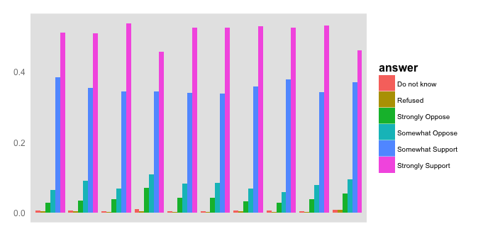

- I am planing on making a grouped bar plot. X axis shows questions, y axis shows percentage and data grouped by answers. I hope to add mouseover fact which shows the exact number when moving the mouse to the bar. Following is the graph I made using R. 
- The data is about respondents' attitude towards how strong would they support or oppose the role of women in several positions. They data contains the questions, answers and the percentage of respondents have the certain answer grouped by questions.
- The data is stored in csv file.
- d3.csv(data.csv, function(error, data){})
- JS Steps
- create svg canvas which will be used to draw the plot
- map and set domain for the x and y variable from the dataset
- create variable question and answer for separate and group data
- draw bars corresponding for each data value
- add color and other styling element